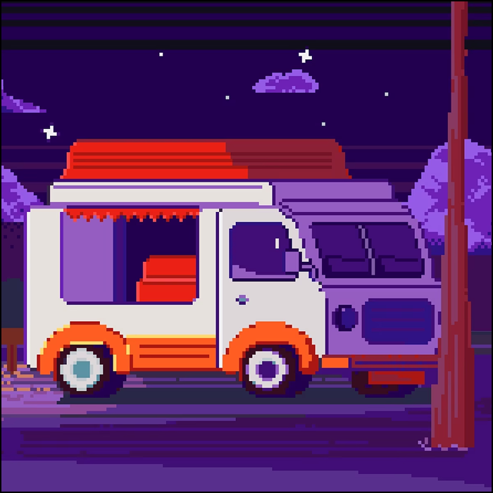

Фритрек и нулевой спринт: Разгон
старт

До первого дедлайна всё ощущалось как длинный вдох: много новых слов, вкладок и маленьких открытий. Важнее всего было не скорость, а момент, когда обучение перестало быть абстракцией и стало настоящим планом.
Я помню это состояние как тихое волнение: вроде ничего ещё не сделал, а путь уже начался.